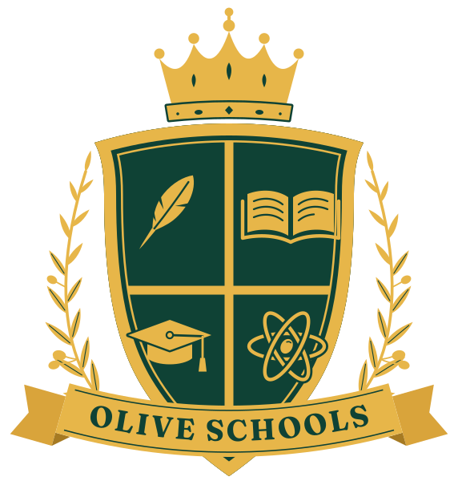
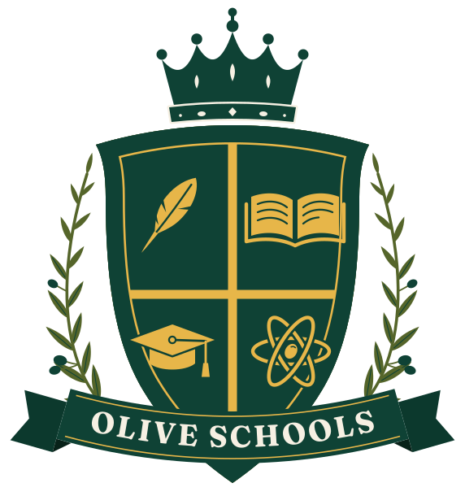
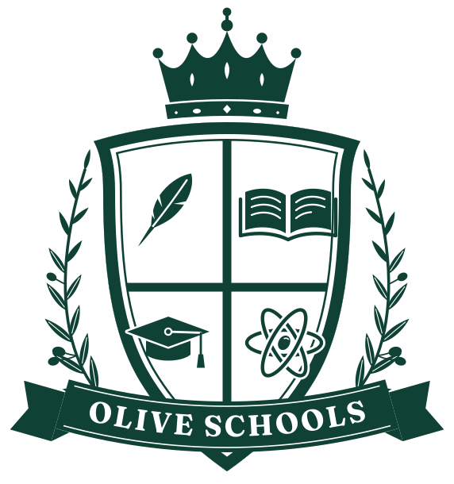
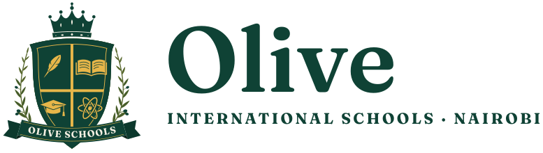
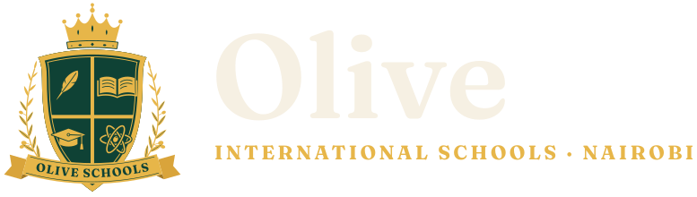

Before and after


Olive International Schools · Nairobi
The same crest families already recognise, with every element redrawn so it looks deliberate, reads clearly at any size, and finally says something about the name Olive.

Use the primary crest on green, the light crest on cream or white, and the one-colour versions for embroidery, rubber stamps, engraving and photocopies.

light · on cream / white
one colour · green
one colour · whiteFor letterheads, email signatures, signboards and the website header.


All are free Google Fonts, so anyone making a poster in Canva or Word can use the same type.
Libre Caslon
Headlines, titles and the school name. Set it upright and regular; never bold or italic. Caslon has been the face of British printing for nearly 300 years.
Libre Franklin
Body text, and small labels and buttons in spaced capitals (SemiBold, 0.14–0.18em letter-spacing).
Fraunces
Only the lettering on the crest ribbon. Don't use it for anything else.